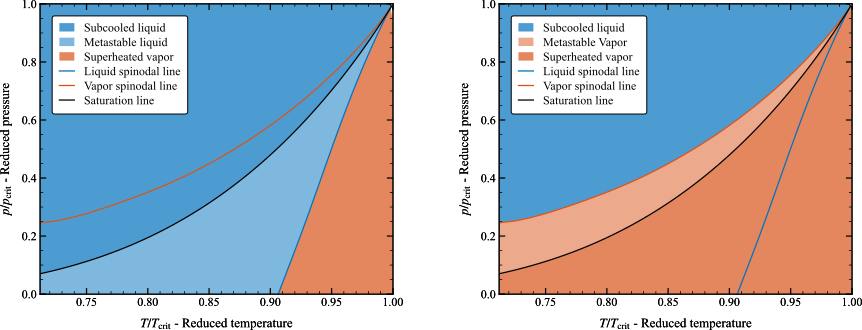

jaxprop.coolprop.core_calculations module#
- jaxprop.coolprop.core_calculations.blend_properties(phase_change, props_equilibrium, props_metastable, blending_variable, blending_onset, blending_width)[source]#
Calculate blending between equilibrium and metastable fluid properties.
A cubic smoothstep has zero slope at each transition endpoint. At an exact endpoint the selected branch is recovered even if an optional field on the inactive branch is unavailable. Inside the transition both optional values are needed.
is_two_phaseis unavailable inside the constitutive blend, since a fractional phase flag would not have its usual physical meaning. The coordinate/factor are not returned as thermodynamic fields:sigmaalready denotes surface tension in the public property schema.- Parameters:
- phase_changestr
The type of phase change (e.g., ‘condensation’, ‘evaporation’, ‘flashing’, ‘cavitation’). Cavitation, flashing, and evaporation do the same calculations, they are aliases added for convenience.
- props_equilibriumdict
The equilibrium properties.
- props_metastabledict
The metastable properties.
- blending_variablestr
The variable used for blending.
- blending_onsetfloat
The onset value for blending.
- blending_widthfloat
The width value for blending.
- Returns:
- dict
Blended thermodynamic properties.
- jaxprop.coolprop.core_calculations.calculate_generalized_quality(abstract_state, alpha=10, source_context=None)[source]#
Return physical quality in the dome and an entropy extension outside.
Subcritical one-phase states use saturated entropies at their temperature: Q=(s-s_L)/(s_V-s_L). For supercritical temperatures no physical vapor fraction exists. The conventional entropy coordinate is centered on the source’s critical-density isochore, with positive half-width R_specific*max(T/Tc-1, sqrt(machine_epsilon)). This gas-constant scale replaces multiples of absolute critical entropy: reference changes cannot change the indicator or reverse its orientation. The tiny reduced-temperature floor defines the exact critical limit without division by zero.
Outside the physical dome the log-sum-exp limiters smoothly bound the coordinate near [-1, 2]. It is an indicator, not an equilibrium quality or metastable branch selector. Missing source endpoints remain unavailable.
- jaxprop.coolprop.core_calculations.calculate_mixture_properties_hp(h_mix, p_mix, AS1, AS2, R)[source]#
Evaluate the common-p/T parcel model from caller-owned source states.
- Parameters:
- h_mix, p_mixfloat
Mixture specific enthalpy [J/kg] and common pressure [Pa].
- AS1, AS2CoolProp.AbstractState
Configured component states. Their existing reference conventions are retained; this compatibility call does not reconstruct source objects.
- Rfloat
Nonnegative component mass ratio, mass_1 / mass_2.
- Returns:
- dict
Canonical full properties from the consolidated binary kernel. Density uses additive specific volumes; h/u/s use mass weights. Thermal response and acoustic properties follow the same equilibrium thermodynamics.
- Repeated applications should construct Fluid(method=’binary_mixture’) once
- and use its complete get_state API. This raw compatibility entry shares its
- inverse and mixing implementation rather than maintaining a second model.
- jaxprop.coolprop.core_calculations.calculate_subcooling(abstract_state, source_context=None, *, _transaction=None)[source]#
Calculate the degree of subcooling for a given CoolProp abstract state.
This function computes the subcooling of a fluid using the CoolProp library’s abstract state class. It handles both subcritical and supercritical conditions to provide a measure of subcooling for any thermodynamic state. This results in a continuous variation of subcooling in the two-phase region, which is necessary to achieve reliable convergence of systems of equations and optimization problems involving the degree of subcooling.
- Calculation cases:
Physically meaningful subcooling for subcritical states in the liquid region:
\[\Delta T = T(p, Q=0) - T \quad \text{for} \quad h < h(p, Q=0)\]Artificial subcooling for subcritical states in the vapor and two-phase regions:
\[\Delta T = \frac{h(p, Q=0) - h}{c_p(p, Q=0)}\]Artificial subcooling for supercritical states defined using the critical density line:
\[\Delta T = T(p, \rho_{\text{crit}}) - T\]
- Parameters:
- abstract_stateCoolProp.AbstractState
The abstract state of the fluid for which the subcooling is to be calculated.
- Returns:
- float
The degree of subcooling in Kelvin.
Examples
>>> import CoolProp as CP >>> abstract_state = CP.AbstractState("HEOS", "water") >>> abstract_state.update(CP.PT_INPUTS, 101325, 25+273.15) >>> subcooling = bpy.calculate_subcooling(abstract_state) >>> print(f"Subcooling is {subcooling:+0.3f} K") Subcooling is +74.974 K
>>> abstract_state = CP.AbstractState("HEOS", "water") >>> abstract_state.update(CP.PQ_INPUTS, 101325, 0.05) >>> subcooling = bpy.calculate_subcooling(abstract_state) >>> print(f"Subcooling is {subcooling:+0.3f} K") Subcooling is -26.763 K
- jaxprop.coolprop.core_calculations.calculate_superheating(abstract_state, source_context=None, *, _transaction=None)[source]#
Calculate the degree of superheating for a given CoolProp abstract state.
This function computes the superheating of a fluid using the CoolProp library’s abstract state class. It handles both subcritical and supercritical conditions to provide a measure of superheating for any thermodynamic state. This results in a continuous variation of superheating in the two-phase region, which is necessary to achieve in reliable convergence of systems of equations and optimization problems involving the degree of superheating.
- Calculation cases:
Physically meaningful superheating for subcritical states in the vapor region:
\[\Delta T = T - T(p, Q=1) \quad \text{for} \quad h > h(p, Q=1)\]Artificial superheating for subcritical states in the liquid and two-phase regions:
\[\Delta T = \frac{h - h(p, Q=1)}{c_p(p, Q=1)}\]Artificial superheating for supercritical states defined using the critical density line:
\[\Delta T = T - T(p, \rho_{\text{crit}})\]
- Parameters:
- abstract_stateCoolProp.AbstractState
The abstract state of the fluid for which the superheating is to be calculated.
- Returns:
- float
The degree of superheating in Kelvin.
Examples
>>> import CoolProp as CP >>> abstract_state = CP.AbstractState("HEOS", "water") >>> abstract_state.update(CP.PT_INPUTS, 101325, 120 + 273.15) >>> superheating = calculate_superheating(abstract_state) >>> print(f"Superheating is {superheating:+0.3f} K") Superheating is +20.026 K
>>> abstract_state = CP.AbstractState("HEOS", "water") >>> abstract_state.update(CP.PQ_INPUTS, 101325, 0.95) >>> superheating = calculate_superheating(abstract_state) >>> print(f"Superheating is {superheating:+0.3f} K") Superheating is -54.244 K
- jaxprop.coolprop.core_calculations.calculate_supersaturation(abstract_state, props, source_context=None, *, _transaction=None)[source]#
Evaluate degree of supersaturation and supersaturation ratio.
The supersaturation degree is defined as the actual temperature minus the saturation temperature at the corresponding pressure:
\[\Delta T = T - T_{\text{sat}}(p)\]The supersaturation ratio is defined as the actual pressure divided by the saturation pressure at the corresponding temperature:
\[S = \frac{p}{p_{\text{sat}}(T)}\]The metastable liquid and metastable vapor regions are illustrated in the pressure-temperature diagram. In the metastable liquid region, \(\Delta T > 0\) and \(S < 1\), indicating that the liquid temperature is higher than the equilibrium temperature and will tend to evaporate. Conversely, in the metastable vapor region, \(\Delta T < 0\) and \(S > 1\), indicating that the vapor temperature is lower than the equilibrium temperature and will tend to condense.

Note
Supersaturation properties are only computed for subcritical pressures and temperatures. If the fluid is in the supercritical region, the function will return NaN for the supersaturation properties.
- Parameters:
- abstract_stateCoolProp.AbstractState
The abstract state of the fluid for which the properties are to be calculated.
- propsdict
Dictionary to store the computed properties.
- Returns:
- dict
Thermodynamic properties including supersaturation properties
- jaxprop.coolprop.core_calculations.calculate_trimmed_quality(abstract_state, source_context=None)[source]#
Return exact flash quality/void fraction, or a one-phase entropy label.
Volume quality uses actual flashed vapor density, including the quality- dependent density of gliding pseudo-pure REFPROP models. The one-phase 0/1 extension is only a critical-entropy label, not a physical vapor fraction.
- jaxprop.coolprop.core_calculations.compute_dsdp_q(AS, pressure, quality, rel_dp=0.0001)[source]#
Return a saturation entropy derivative without retaining perturbations.
Analytic endpoint derivatives are preferred. The finite-difference fallback is central in pressure, with its physical step independent of entropy zero. Even failed source flashes restore a standalone caller’s original state.
- jaxprop.coolprop.core_calculations.compute_gruneisen(AS, rel_du=1e-05, source_context=None)[source]#
Return Gamma=(1/rho)*(dp/du)_rho while preserving source state.
Interior two-phase derivatives use the natural PQ map, avoiding unsupported pseudo-pure density/energy flashes. Homogeneous analytic EOS derivatives are preferred; a central energy fallback uses cv*T and p/rho as physical, reference-independent scales. The primary configured state is untouched.
- jaxprop.coolprop.core_calculations.compute_isothermal_joule_thomson(AS, rel_dp=1e-05, source_context=None)[source]#
Return mu_T=(dh/dp)_T, unavailable on a pure saturation manifold.
Pure interior states have dependent pressure and temperature, so this derivative is not defined by an equilibrium two-phase EOS. A PT perturbation would jump to a one-phase branch and produce a misleading finite number. Pseudo-pure glide is differentiated through its actual PQ map instead.
- jaxprop.coolprop.core_calculations.compute_joule_thomson(AS, rel_dp=1e-05, source_context=None)[source]#
Return mu_JT=(dT/dp)_h with isolated analytic/central source evaluation.
- jaxprop.coolprop.core_calculations.compute_properties(abstract_state, prop_1, prop_1_value, prop_2, prop_2_value, calculation_type, rhoT_guess_metastable=None, rhoT_guess_equilibrium=None, phase_change=None, blending_variable=None, blending_onset=None, blending_width=None, supersaturation=False, generalize_quality=False, solver_algorithm='hybr', solver_tolerance=1e-06, solver_max_iterations=100, print_convergence=False, source_context=None)[source]#
Determine the thermodynamic state for the given fluid property pair by iterating on the density-temperature native inputs,
This function uses a non-linear root finder to determine the solution of the nonlinear system given by:
\[\begin{split}R_1(\rho,\, T) = y_1 - y_1(\rho,\, T) = 0 \\ R_2(\rho,\, T) = y_2 - y_2(\rho,\, T) = 0\end{split}\]where \((y_1,\, y_2)\) is the given thermodynamic property pair (e.g., enthalpy and pressure), while density and temperature \((\rho,\, T)\) are the independent variables that the solver iterates until the residual of the problem is driven to zero.
Equilibrium residuals use CoolProp’s phase-equilibrium state. Metastable residuals evaluate the homogeneous Helmholtz potential at the supplied density and temperature, including continuation beyond saturation. The blending route solves both branches for the same two target properties before interpolating their numerical properties. That interpolation is a constitutive transition model, not a single differentiated EOS potential; independent thermodynamic identities need not hold inside its transition.
Density/temperature pairs are evaluated directly without a root or initial guess. Other pairs require finite positive density/temperature guesses. Energy and entropy residuals use the reference-invariant scales \(R_sT_c\) and \(R_s\), where \(R_s\) belongs to the selected EOS. Zero quality/energy targets therefore remain well-defined. Solver success is checked against the actual final thermodynamic residual independently of its termination flag.
- Parameters:
- prop_1str
The the type of the first thermodynamic property.
- prop_1_valuefloat
The the numerical value of the first thermodynamic property.
- prop_2str
The the type of the second thermodynamic property.
- prop_2_valuefloat
The the numerical value of the second thermodynamic property.
- rho_guessfloat
Initial guess for density
- T_guessfloat
Initial guess for temperature
- calculation_typestr
The type of calculation to perform. Valid options are ‘equilibrium’, ‘metastable’, and ‘blending’.
- supersaturationbool, optional
If True, calculates supersaturation variables. Defaults to False.
- generalize_qualitybool, optional
If True, generalizes quality outside two-phase region. Defaults to False.
- blending_variablestr, optional
The variable used for blending properties. Required if calculation_type is ‘blending’.
- blending_onsetfloat, optional
The onset value for blending. Required if calculation_type is ‘blending’.
- blending_widthfloat, optional
The width value for blending. Required if calculation_type is ‘blending’.
- solver_algorithmstr, optional
Method to be used for solving the nonlinear system. Defaults to ‘hybr’.
- solver_tolerancefloat, optional
Tolerance for the solver termination. Defaults to 1e-6.
- solver_max_iterationsinteger, optional
Maximum number of iterations of the solver. Defaults to 100.
- print_convergencebool, optional
If True, displays the convergence progress. Defaults to False.
- source_contextSourceEvaluationContext, optional
Matching configured helper/reference context, reused throughout the complete solve. The owning Fluid holds its reentrant transaction lock.
- Returns:
- dict
Thermodynamic properties corresponding to the given input pair.
- jaxprop.coolprop.core_calculations.compute_properties_1phase(abstract_state, generalize_quality=False, supersaturation=False, source_context=None)[source]#
Extract single-phase properties from CoolProp abstract state. Returns dict with canonical property names.
- jaxprop.coolprop.core_calculations.compute_properties_2phase(abstract_state, supersaturation=False, source_context=None)[source]#
Return homogeneous-equilibrium responses of the actual source PQ map.
Phase-change mass transfer is included in equilibrium response functions. In particular, cv is not a mass average of phase heat capacities. For a pure fluid in the dome, temperature is fixed by pressure: cp, expansion, isothermal compressibility and (dh/dp)_T are singular or not uniquely defined and remain unavailable. Exact endpoints expose one-phase responses instead.
Pseudo-pure source models have temperature glide. Phase densities come from the actual flash, not a new QT flash at the bulk temperature. PQ Jacobians respect each backend’s empirical interpolation geometry. Sound speed is sqrt((dp/drho)_s), equivalent to the usual pure-fluid HEM sound relation. Transport retains an empirical phase-volume average of the pressure’s bubble/dew endpoint correlations. In particular, REFPROP does not expose actual quality-dependent phase transport through its saturation getters; these endpoint averages are a model approximation, not an exact mixture law.
- jaxprop.coolprop.core_calculations.compute_properties_coolprop(abstract_state, input_type, prop_1, prop_2, generalize_quality=False, supersaturation=False, source_context=None)[source]#
Set the thermodynamic state of the fluid based on input properties.
This method updates the thermodynamic state of the fluid in the CoolProp
abstractstateobject using the given input properties. It then calculates either single-phase or two-phase properties based on the current phase of the fluid.If the calculation of properties fails, converged_flag is set to False, indicating an issue with the property calculation. Otherwise, it’s set to True.
Aliases of the properties are also added to the
Fluid.propertiesdictionary for convenience.- Parameters:
- input_typeint
The variable pair used to define the thermodynamic state. This should be one of the predefined input pairs in CoolProp, such as
PT_INPUTSfor pressure and temperature.- prop_1float
The first property value corresponding to the input type.
- prop_2float
The second property value corresponding to the input type.
- Returns:
- dict
A dictionary object containing the fluid properties
- jaxprop.coolprop.core_calculations.compute_properties_metastable_rhoT(abstract_state, rho, T, supersaturation=False, generalize_quality=False, source_context=None)[source]#
Compute the thermodynamic properties of a fluid using temperature-density calls to the Helmholtz energy equation of state (HEOS).
- Parameters:
- abstract_stateCoolProp.AbstractState
The abstract state of the fluid for which the properties are to be calculated.
- rhofloat
Density of the fluid (kg/m³).
- Tfloat
Temperature of the fluid (K).
- supersaturationbool, optional
Whether to evaluate supersaturation properties. Default is False.
- generalize_qualitybool, optional
Request the documented generalized entropy coordinate instead of the trimmed one-phase label. Neither is an equilibrium vapor fraction for a homogeneous metastable point.
- source_contextSourceEvaluationContext, optional
Construction-prepared helper state and reference data matching the supplied source. Configured Fluid calls provide this context so no runtime source construction or later global reference convention is used.
- Returns:
- dict
Thermodynamic properties computed at the given density and temperature.
Notes
The Helmholtz energy equation of state (HEOS) expresses the Helmholtz energy as an explicit function of temperature and density:
\[\Phi = \Phi(\rho, T)\]In dimensionless form, the Helmholtz energy is given by:
\[\phi(\delta, \tau) = \frac{\Phi(\delta, \tau)}{R T}\]where:
\(\phi\) is the dimensionless Helmholtz energy
\(R\) is the gas constant of the fluid
\(\delta = \rho / \rho_r\) is the reduced density
\(\tau = T_r / T\) is the inverse of the reduced temperature
The selected EOS supplies its gas constant and reducing parameters \(\rho_r\) and \(T_r\); these need not equal the critical values.
Thermodynamic properties can be derived from the Helmholtz energy and its partial derivatives. The following table summarizes the expressions for various properties:
Helmholtz energy thermodynamic relations# Property name
Mathematical relation
Pressure
\[Z = \frac{p}{\rho R T} = \delta \cdot \phi_{\delta}\]Entropy
\[\frac{s}{R} = \tau \cdot \phi_{\tau} - \phi\]Internal energy
\[\frac{u}{R T} = \tau \cdot \phi_{\tau}\]Enthalpy
\[\frac{h}{R T} = \tau \cdot \phi_{\tau} + \delta \cdot \phi_{\delta}\]Isochoric heat capacity
\[\frac{c_v}{R} = -\tau^2 \cdot \phi_{\tau \tau}\]Isobaric heat capacity
\[\frac{c_p}{R} = -\tau^2 \cdot \phi_{\tau \tau} + \frac{(\delta \cdot \phi_{\delta} - \tau \cdot \delta \cdot \phi_{\tau \delta})^2}{2 \cdot \delta \cdot \phi_{\delta} + \delta^2 \cdot \phi_{\delta \delta}}\]Isobaric expansivity
\[\alpha \cdot T = \frac{\delta \cdot \phi_{\delta} - \tau \cdot \delta \cdot \phi_{\tau \delta}}{2 \cdot \delta \cdot \phi_{\delta} + \delta^2 \cdot \phi_{\delta \delta}}\]Isothermal compressibility
\[\rho R T \beta = \left(2 \cdot \delta \cdot \phi_{\delta} + \delta^2 \cdot \phi_{\delta \delta} \right)^{-1}\]Isothermal bulk modulus
\[\frac{K_T}{\rho R T} = 2 \cdot \delta \cdot \phi_{\delta} + \delta^2 \cdot \phi_{\delta \delta}\]Isentropic bulk modulus
\[\frac{K_s}{\rho R T} = 2 \cdot \delta \cdot \phi_{\delta} + \delta^2 \ \cdot \phi_{\delta \delta} - \frac{(\delta \cdot \phi_{\delta} - \tau \cdot \delta \cdot \phi_{\tau \delta})^2}{\tau^2 \cdot \phi_{\tau \tau}}\]Joule-Thompson coefficient
\[\rho R \mu_{\mathrm{JT}} = - \frac{\delta \cdot \phi_{\delta} + \tau \cdot \delta \cdot \phi_{\tau \delta} + \delta^2 \cdot \phi_{\delta \delta}}{(\delta \cdot \phi_{\delta} - \tau \cdot \delta \cdot \phi_{\tau \delta})^2 - \tau^2 \cdot \phi_{\tau \tau} \cdot (2 \cdot \delta \cdot \phi_{\delta} + \delta^2 \cdot \phi_{\delta \delta})}\]Where the following abbreviations are used:
\(\phi_{\delta} = \left(\frac{\partial \phi}{\partial \delta}\right)_{\tau}\)
\(\phi_{\tau} = \left(\frac{\partial \phi}{\partial \tau}\right)_{\delta}\)
\(\phi_{\delta \delta} = \left(\frac{\partial^2 \phi}{\partial \delta^2}\right)_{\tau, \tau}\)
\(\phi_{\tau \tau} = \left(\frac{\partial^2 \phi}{\partial \tau^2}\right)_{\delta, \delta}\)
\(\phi_{\tau \delta} = \left(\frac{\partial^2 \phi}{\partial \tau \delta}\right)_{\delta, \tau}\)
This function can be used to estimate metastable properties using the equation of state beyond the saturation lines.